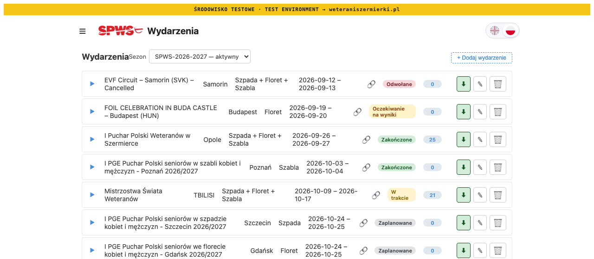
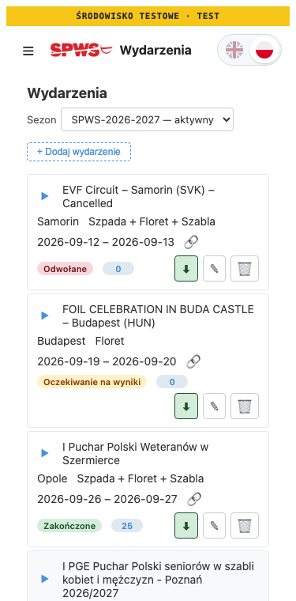

Admin UI · W2 #9 of the workflow page plan · before/after for your sign-off · 25 Oct 2026
Two admin texts now say what has happened, and nothing else on the screens moves.
The ⬇ on an event row finds result links; its tooltip said it imports results. The alias screen’s last line said the report was regenerated and sent, when GitHub had only accepted the start. Only those two strings change. Every screen captured before and after is pixel-identical. Committed on the branch only; nothing goes to main before you sign off.
§ 1 · the change
The two texts
| Where | Before | After | Why |
|---|---|---|---|
| Admin → Events, the ⬇ on an event row (tooltip, English) | Import results from event page | Find result links on the event page | The button starts populate-urls.yml, which writes each tournament’s url_results and imports no result. |
| Same, Polish | Importuj wyniki ze strony wydarzenia | Znajdź linki do wyników na stronie wydarzenia | |
| Admin → Fencers → Aliases, last line after “Create new fencer” | ✓ PPW1-2026-2027/full.md regenerated · sent to Telegram | ✓ PPW1-2026-2027/full.md regeneration started · the report arrives on Telegram | The call returns when GitHub accepts the start; regen-report.yml renders and sends the report afterwards and can still fail (it then sends its own failure message). |
The tooltip is a title attribute, shown on hover, so it leaves no pixels; it was read from the page instead. All 22 ⬇ buttons carry “Import results from event page” before and “Find result links on the event page” after in English, and the Polish pair above in Polish. On LOCAL the alias screen still shows its unchanged line “regen skipped on LOCAL”.
§ 3 · no other change
Every captured screen, compared pixel by pixel
| Screen | Viewport | Page size | Pixels changed |
|---|---|---|---|
| Admin → Events | 1280px | 1280 × 2157 | 0 |
| Admin → Events | 375px | 375 × 4829 | 0 |
| Admin → Fencers → Aliases | 1280px | 1280 × 2641 | 0 |
| Admin → Fencers → Aliases | 375px | 425 × 3521 | 0 |
Full pages, light scheme, signed in as the LOCAL test admin. The Aliases captures show fencers’ admin details, so they stay out of the repository; only their numbers are here. The top of Admin → Events, before and after:




§ 4 · how this was captured
Two builds, one LOCAL database, nothing written
- BEFORE was built from the committed versions of the four changed files, AFTER from the working tree (
vite build); the working tree was restored after each build. - Headless Chromium, no server: the harness answers every request to
localhostfrom the build, and the app reads LOCAL Supabase as usual.?admin=1signs in the test admin thatscripts/reset-dev.shcreates. - The banner needs the CERT/PROD path, so both banner builds set
VITE_DEPLOY_ENV=CERT, which only switches the regen from “skipped on LOCAL” to a dispatch. The split RPC and the dispatch call were answered by the harness with a fixed result, so LOCAL was not written: it holds no fencer “TESTOWY” afterwards.
§ 5 · the code
What changed in the source
frontend/src/lib/locales/en.json,pl.json:tooltip_import_event.frontend/src/lib/api.ts:regenStagingReportStep(eventCode, result), the line the alias screen shows for one regen;App.sveltecalls it instead of building the line inline.- Tests:
EventManager.test.ts9.45r (both locales and the renderedtitle),api.regenStagingReport.test.ts5.3.5 (the started line, and the LOCAL line kept). Both seen red first. Vitest 1247/1247; svelte-check 0 errors, 0 warnings.
§ 6 · decide this
One sign-off, one finding
Found while capturing: at 375px the Aliases screen is 425px wide, so a phone scrolls sideways. It is the same before and after this change; nothing here caused it. A UI change waits for your word, so it is a question here.
| # | Question | Options | Rec. |
|---|---|---|---|
| T1 | The two texts as shown | A accept; they go to main with the rest of W2 after the final sheetB other wording (say which) | A |
| T2 | The Aliases screen wider than a phone | A fix it in this session, test first, with its own before/after sheet B leave it | A |
admin-texts-before-after-2026-10-25 · 25 Oct 2026 · LOCAL Supabase, headless Chromium (Playwright), builds of the committed and working-tree front end · plan: github-actions-workflows-page-2026-10-24.html W2 #9